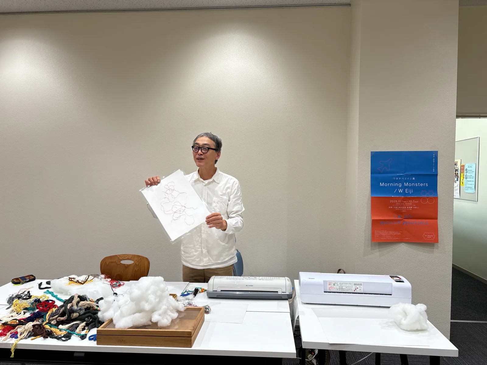
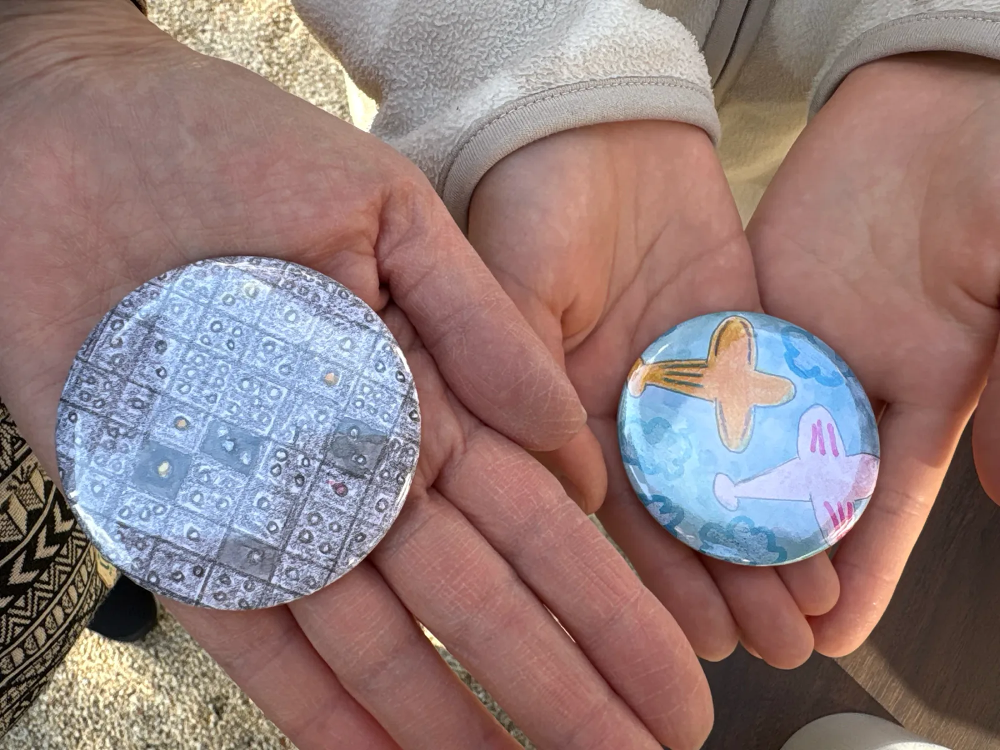

ワークショップ「MITATE」
- 日時
- 2025年11月1日（土）14:00–15:30
- 会場
- 大府市歴史民俗資料館 2F 展示室
- 講師
- 渡辺英司（アーティスト）
- 料金
- 200円
- 参加者数
- 11人
想像することから創造が始まります。「見立て」をテーマに作品を作りました。

会期中に休憩棟と中庭の小屋、歴史民俗資料館、図書館で行われた8件の催し。カタログの関連行事の記録を掲載し、末尾に会期後の活動をまとめた。
想像することから創造が始まります。「見立て」をテーマに作品を作りました。

かつて鈴木昭男が手がけた小屋「もんどり庵」がワタナベエイジによりオマージュ復刻。2021年の招聘作家の鈴木、同じくダンス参加の宮北をふたたび大府に迎え、小屋を起点にしたパフォーマンスを行いました。
図書館のガラスケースに渡辺英司の《蝶瞰図》を展示した。
芸術家と科学者、それぞれの研究と、異なる二つのジャンルが出会うおもしろさについて話しました。
ワタナベエイジさんの作品の中からお気に入りの「かけら」を見つけて、描いて、オリジナルの缶バッジを作りました。

作家と学芸員の出会いからトリエンナーレのこぼれ話まで、楽しんでいただきました。
大倉公園休憩棟中庭、小屋「変身もんどり庵」にて出張喫茶が開かれ、淹れたての珈琲を多くの方に楽しんでいただきました。
小屋「変身もんどり庵」にて、アートオブリスト限定グッズをつくれる・買える shop を展開。二人のワタナベエイジのドローイングをもとに、手製のオリジナル T シャツ、缶バッジを販売。陶器の飛行機や錯視の立体オブジェなど、二人の作品や研究にかかわるグッズが当たるガチャガチャも。
物理学研究者・渡部匡己が、二人のワタナベエイジの活動を解析した講義。内容は「W Eiji 論」のサイトにまとめられている。
Art Obulist 公式 YouTube チャンネルで全編（1時間25分14秒）が視聴できます。
全 3 本の動画。第 1 回は 8 月 17 日に公開。
渡辺英司と渡辺英治が並んで登壇した、愛知教育大学の夏期集中講義の記録。